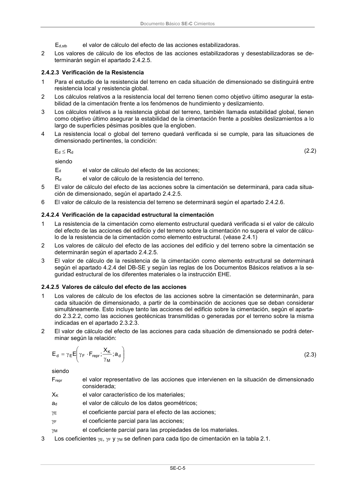

DB-SE-C · 2.4.2.2 Verificación de la Estabilidad · versión 2019-12-20 · capa oficial
Formatos: JSON compacto · Markdown · PDF fuente
Ámbito del documento · texto del ámbito · documento y tablas
ID técnico a0030 · PDF pág. 9-10 · jerarquía no validada por persona · contrastado con el literal de la página 9 (candidato tipográfico); no validado por persona · padre: raíz
2.4.2.2 Verificación de la Estabilidad 1 El equilibrio de la cimentación (estabilidad al vuelco o estabilidad frente a la subpresión) quedará verificado, si para las situaciones de dimensionado pertinentes se cumple la condición: Ed,dst Ed,stb (2.1) siendo Ed,dst el valor de cálculo del efecto de las acciones desestabilizadoras; Documento Básico SE-C Cimientos SE-C-5 Ed,stb el valor de cálculo del efecto de las acciones estabilizadoras. 2 Los valores de cálculo de los efectos de las acciones estabilizadoras y desestabilizadoras se de- terminarán según el apartado 2.4.2.5.

PDF fuente redistribuible: copia fiel enlazada en esta página (SHA256 verificado).